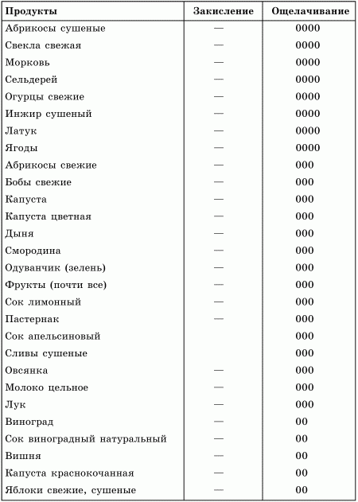
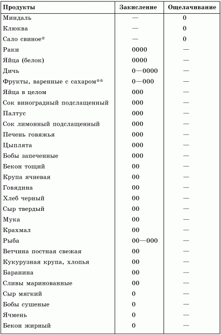

Общие сведения о минеральных веществах

Пища, не содержащая минеральных солей, хотя бы она во всем остальном удовлетворяла условиям питания, ведет к медленной голодной смерти, потому что обеднение тела солями неминуемо ведет к расстройству питания.
Минеральные вещества входят в состав всех тканей организма человека, ферментов и гормонов. Подобно витаминам, они обязательно участвуют в процессах образования энергии, роста и восстановления организма.
Минеральные вещества поступают в организм человека с пищей и водой. Распределение их в организме неравномерно, преимущественно в костях.
Содержание различных минеральных веществ в организме неодинаково; химические элементы, содержание которых составляет в организме человека граммы, называют макроэлементами, а химические элементы, встречающиеся в очень малых количествах, – микроэлементами.
С возрастом содержание минеральных веществ в организме значительно меняется. Причем в период интенсивного роста и развития отмечается значительное нарастание содержания микроэлементов, которое постепенно замедляется или прекращается к 17–20 годам.
Минеральный состав тела взрослого человека весом 70 кг:
кальций – 1510 г (2,2 %);
фосфор – 840 г (1,2 %);
калий – 245 г (0,35 %);
сера – 105 г (0,15 %);
хлор – 105 г (0,15 %);
натрий – 105 г (0,15 %);
магний – 70 г (0,1 %);
железо – 3,5 г (0,005 %);
цинк – 1,75 г (0,0025 %);
медь – 0,07 г (0,00011 %).
Физиологическое значение минеральных элементов определяется их участием:
• в структуре и функциях большинства ферментативных систем и процессов, протекающих в организме;
• в пластических процессах и построении тканей организма, особенно костной ткани, где фосфор и кальций являются основными структурными компонентами;
• в поддержании кислотно-щелочного равновесия в организме;
• в поддержании нормального солевого состава крови и участии в структуре формирующих ее элементов;
• в нормализации водно-солевого обмена.
Особая роль принадлежит минеральным веществам в поддержании кислотно-щелочного равновесия (КЩР), которое обеспечивает постоянство внутренней среды – концентрацию водородных ионов в клетках и тканях, межтканевых и межклеточных жидкостях для нормального течения процессов обмена.
Научные исследования показали, что фактором, способствующим развитию ацидоза (сдвига внутренней среды организма в кислую сторону), служит преимущественное потребление животных жиров и белков, причем у пожилых людей эти явления выражены в наибольшей степени. Введение углеводов вызывает сдвиги КЩР в сторону метаболического алкалоза (щелочную сторону).
Учитывая важность поддержания в организме кислотно-щелочного равновесия и влияние на него кислотообразующих и щелочеобразующих веществ пищи, было проведено разделение минеральных веществ пищевых продуктов на вещества щелочного и кислого действия.
В процессе тщательных научных исследований оказалось, что главным источником минеральных элементов является растительная пища – фрукты и особенно овощи. Причем в свежих овощах и фруктах они находятся в самой активной форме и легко усваиваются организмом.
Зерновые и бобовые при распаде в желудочно-кишечном тракте образуют продукты со слабокислой реакцией, но зато они предоставляют много ценных питательных элементов и не образуют вредных шлаков при метаболизме, как продукты животного происхождения.
Продукты животного происхождения – мясо, рыба, брынза, масло и другие, за исключением полноценного свежего молока, – образуют продукты с кислой реакцией. Подобный эффект имеет белый хлеб, мучные изделия из белой муки, шлифованный рис, рафинированный сахар и др.
В табл. 2 приведена сравнительная характеристика продуктов питания по степени закисления и ощелачивания организма.
Таблица 2. Характеристика продуктов питания по степени закисления и ощелачивания организма

Условные обозначения: 0 —слабое закисление или ощелачивание; 00—среднее; 000 —сильное; 0000 – очень сильное.

* Использование сала при приготовлении пищи делает продукты более кислыми.
** Добавление сахара к фруктам или сокам закисляет их.